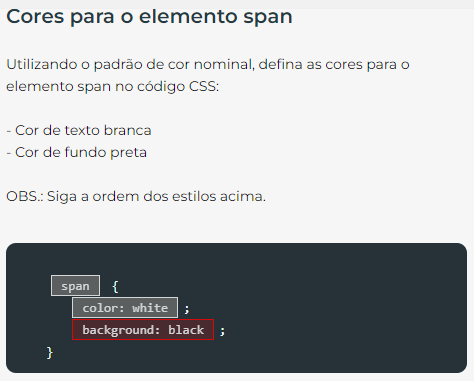

Questão|8464
Estilizando o link
Precisamos estilizar o elemento
<a>
atendendo aos itens abaixo:
cor de fundo azul (padrão nominal)
cor de texto branca (padrão nominal)
aplicação de negrito
remoção do sublinhado
span {
color: white;
background-color: black;
}
